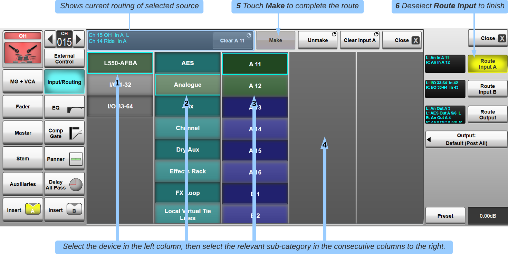
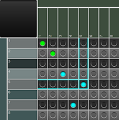
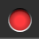
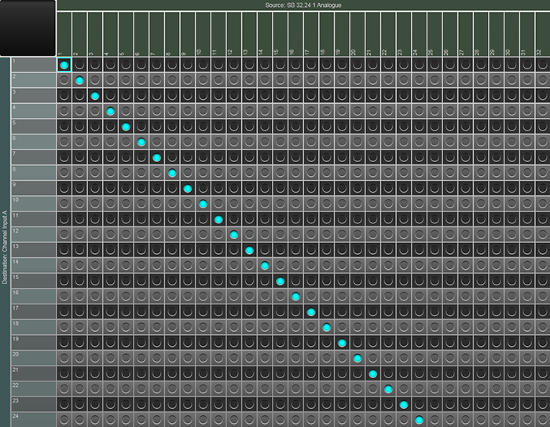
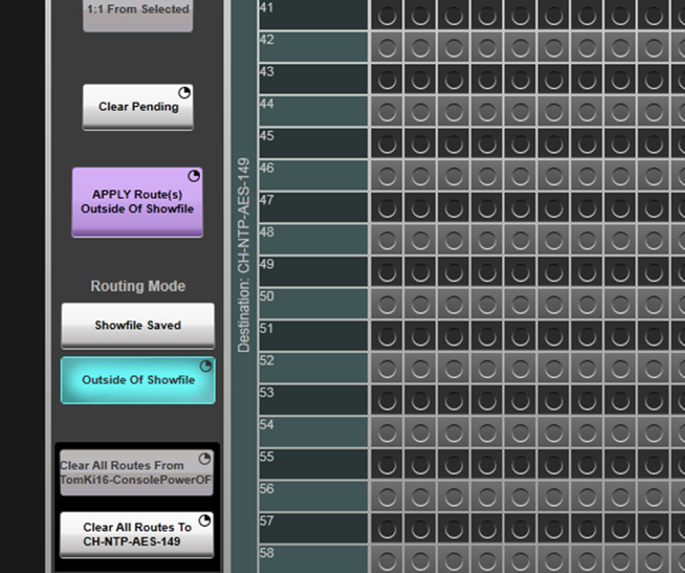
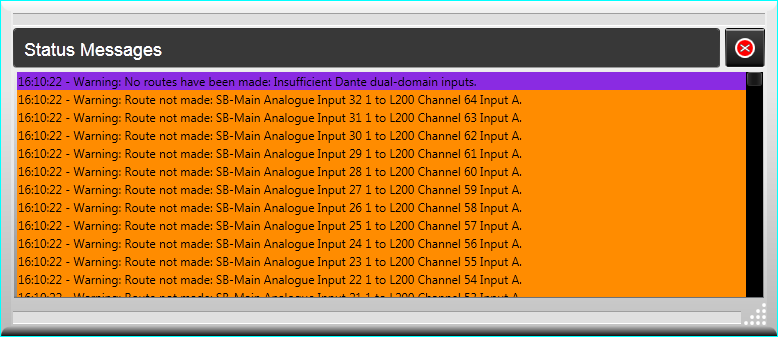

Routing
The Live console's signal routing is extremely flexible; almost anything can be routed anywhere! For example, a stagebox input can be routed directly to an FX Rack module or a Channel's dynamics Key Input without using another console Channel (use the I/O page to set preamp gain if required).
Routing can be done in two different ways:
- From the Routing View: To make one route to/from a path
- From XY Routing (below): To make multiple routes at the same time (e.g. when bulk routing channel inputs from stageboxes)
For further information on I/O configuration, please refer to the Clocking & I/O Connections section.
Routing View
The Routing View appears in many places throughout the console. Most commonly, the Routing View is found in the following places:
- Route Input A, Route Input B and Route Output buttons in the Input/Routing section of the Detail View
- Route Send and Route Return buttons in the Insert A/Insert B sections of the Detail View
- When routing the Matrix inputs and outputs
- When routing the key input to Dynamics FX units
Note: Outputs can be routed to any number of destinations and are Post All processing (including the fader) for all path types except Channels, which can be set per Channel or by default.
For example, to select a source for a channel's main input (Input A), touch Route Input A in the input/routing detail dialogue.
The Routing View will appear:

Touching a group in the left column will open the contents in the next column, and again for the third and fourth columns if necessary.
Swipe to scroll up or down the column list if necessary.
For stagebox or generic MADI/Dante devices, the physical device will appear in the first column, its I/O types in the second column, then the individual I/O in the next column.
The console internal I/O is available by touching the console group (listed as LIVE and ID number), then by selecting the source type and source number. If selecting channel or bus signals, you can then select the possible source points from the channel.
Press Make to complete the route.
Note: If routing multichannel inputs or outputs (Stereo, LCR etc.), press & hold the Make button and press Make All to make all 'legs' of the path to consecutive physical connectors where possible.
XY Routing (explained below) can also be used to route to consecutive connections.
Alternatively select the channel strip on the Main screen and press the Spill button on the right hand side to route each leg in turn.
The colours of the routing boxes indicate the following:
| Green: Device or device element which is active (detected and locked) and contains routes to/from this channel; | |
| Cyan: Device or device sub-category which is active and available for routing but is not a routable element; | |
| Blue: Device element that can be routed, is active and available for routing to/from this channel; | |
| Grey: Device or device element is inactive (not detected or not locked) and does not contain routes to/from this channel. | |
| Brown: Device or device element is active but is already in use and is therefore unavailable to be routed. | |
| Yellow: Device or device element is inactive and already in use. Audio will not be present on this device. | |
| Red: Device or device element is inactive and contains routes to/from this channel. Audio will not be present on this device. |
There are three levels of 'unmaking' routes:
For Route In:
- Clear <element> (e.g. Clear Analogue A 11) unmakes all routes from the selected device element/physical connector (as shown in the scrollable current routes display to the left of the Clear <element> button), including existing routes to other channels;
- Unmake unmakes only the selected channel's input route from the device element that is highlighted (selected). Other channels routed to the same source are unaffected;
- Clear Input A/Clear Input B unmakes all of the channel's input routes, even if they are not currently selected. This includes all components of a stereo/LCR channel but not the channel's other (A or B) input.
For Route Out:
- Clear <element> (e.g. Clear AES 5/6) unmakes all routes to the selected device element/physical connector;
- Unmake unmakes the channel's output route from the device element that is highlighted;
- Clear Output unmakes all of the channel's output routes, even if not currently selected. This includes all components of a stereo/LCR channel.
To close the display, select another detail page, deselect Route or touch the Close button.
Note: The Close button above the routing columns closes the routing but leaves the detail dialogue open. Touching Close above the route button will close the whole detail dialogue.
XY Routing

The XY Routing page (MENU > Setup > XY Routing) provides a grid-style interface for bulk routing.
The XY routing page provides an overview of patch status and the ability to quickly route large and complex patch assignments.
Start by selecting the desired Source and Destination at the top left of the page. The Source will be listed on the y axis and the Destination on the x axis.
Tap in any crosspoint to create a pending route (cyan). To make the route press and hold Apply. If the device is online and locked, the route will go green. If the device is offline or not locked, the route will go red.
Multiple assignments can be made simultaneously by pressing and holding the first crosspoint, then touching the last cross point and then releasing both fingers. Alternatively, tap in the first crosspoint, then press 1:1 From Selected. A series of 1:1 pending routes (cyan) will be displayed. To make the routes press and hold Apply.
To clear routes, tap on the crosspoints and they will display as a hollow circle (pending unroute state). Press & hold Apply to action the changes.
Alternatively, press & hold Clear All Routes From... to clear all routes from the selected source (e.g. a whole stagebox), or Clear All Routes To... to clear all routes to the selected destination (e.g. all Channel Input A's). Note: The Clear All... buttons will unmake routes immediately - the Apply button does not need to be pressed.
| Selected cell (cyan border) | |
| No route | |
| Pending route | |
| Pending unroute | |
| Route successfully made, device available | |
 |
Route made, device unavailable |
When an input or output is already routed to/from one location, the name on the axis will grey out. If an input is routed to multiple locations, the name on the axis will turn orange.
If an input is already routed to one or more destinations, additional routes can be made from this input to more destinations
If an output is already routed to from another source, creating a new route to this output in XY Routing will overwrite the previous route. Overwriting routes can only be done from XY Routing. In the normal routing view, a route to an output must be unmade, before a route from a different source can be created.
Tap on the source/destination point on the axis to display the current route in the top left detail box.
There are navigation buttons to the right of the page that allow movement through large lists. Align Selected moves the grid so that the selected crosspoint is in the top left. Home returns the grid to the default position (top left of grid).
Use the Refresh I/O button to refresh the XY Routing page.

Routing Modes
XY Routing includes two routing modes
- Showfile Saved - Standard mode.
- Outside of Showfile - Persistent routes for Dante only.
With full Dante routing directly from the console, you can choose to store routes within the showfile or configure them as independent, system-wide Dante routes. This effectively transforms the console into a powerful Dante controller, enabling seamless management of system-level routing.

The SSL Live console software fully integrates Dante routing, seamlessly embedding patching into the showfile and allowing complete routing control from a single user interface. All Dante devices can be configured and patched directly on the console, even offline. This functionality extends to the console's offline editor, SOLSA, enabling complete show preparation in advance. With Dante as a scalable extension of the console, SSL Live offers a powerful audio routing solution under full console control.
With this power comes flexibility: routes and Dante subscriptions can be manually overridden as needed, but the console never automatically overwrites settings. The software applies an automatic arbitration process, with the 'first-in-wins' approach, and releases Dante subscriptions when the console powers down or a showfile unloads, freeing resources for other consoles or signals for alternate events. Everything is stored within the showfile for full recallability.
When a permanent signal is needed, SSL Live includes an Outside of Showfile Routing Mode. Subscriptions made in this mode remain active even when the console is turned off or a different showfile is loaded, eliminating the need to open Dante Controller for persistent 'house routes.'
Troubleshooting
If the console cannot make any or some of the Dante routes, a pop up will appear. Refer to the Status Message area in the top left of the screen for further details. There will be a Status Message to explain why the routes have not been made.
The message displayed will be one of the following:
| Message | Meaning |
|---|---|
| Warning: Some routes have not been made: Insufficient Dante dual-domain inputs. |
Some of the attempted routes have been made successfully and some have not. This is because there are not enough dual-domain inputs left to make all of the routes. |
| Warning: Some routes have not been made: Insufficient Dante dual-domain outputs. |
Some of the attempted routes have been made successfully and some have not. This is because there are not enough dual-domain outputs left to make all of the routes. |
| Warning: No routes have been made: Insufficient Dante dual-domain inputs. |
None of the attempted routes have been made. This is because there are not enough dual-domain inputs left to make any of the routes. |
| Warning: No routes have been made: Insufficient Dante dual-domain outputs. |
None of the attempted routes have been made. This is because there are not enough dual-domain outputs left to make any of the routes. |
Double tap on the Status Message to open the Status Message window. This displays all of the Status Messages in the last boot.

There will be a Status Message for every failed Dante route. Scroll down the list to view the failed routes. Any attempted routes not listed have been made successfully.
Gain Sharing
MADI Stageboxes
When more than one console is receiving signals from the same MADI stagebox, only one console can have remote control of the stagebox pre-amps. The 'Master' console is simply whichever one is connected to the MADI inputs of the stagebox (or port A of the Blacklight Concentrator, if connected over Blacklight II).
The Gain Share function allows the console without pre-amp control (the 'Slave' console) to compensate digitally for any changes made to the analogue signal level by the Master console, therefore avoiding unintended changes to the Slave console's overall input level:
Once the Master console engineer has settled on an initial analogue gain for a channel, the Slave console engineer should activate Gain Sharing by pressing the Gain Share button on their Slave console.
Now, if the analogue pre-amp gain is decreased by 3 dB by the Master console, the digital trim on the Slave console will increase by 3 dB. If Gain Sharing is left off on the Slave console, there will be no digital compensation on the Slave console for analogue gain changes.
Note: Large gain changes on the Master console (e.g. engaging the Pad or High Gain Sensitivity mode) may cause audible level changes on the Slave console as it applies a compensating trim.The colour of the LED bar at the top of the Gain Share button indicates whether the signal level will increase or decrease if Gain Sharing is turned off. A grey light indicates that no digital trim offset has been applied (i.e. the analogue gain has not been changed since Gain Sharing was switched on).
A green light indicates that turning Gain Sharing off will result in a decrease in level. (The analogue gain has been turned down and therefore the console has compensated by turning the digital trim up, so turning Gain Sharing off will remove this offset.)
A red light indicates that caution should be taken as turning Gain Sharing off will result in an increase in level.
The text field below the Gain Share button indicates the amount of digital trim that has been applied to the channel.
Note: The 'Master' console also has a Gain Share button and digital trim control. These have no effect on the 'Slave' console's gain, nor do the 'Slave' console's Gain Share button and digital trim have any effect on the 'Master' console's gain.The 'Master' console's Gain Share button can be used to self gain share in order to maintain a consistent gain structure, even if the analogue gain needs to be changed. This is useful if settings such as compressor and gate thresholds have been already set and wish to be maintained.
Dante Stageboxes
Gain sharing using Dante stageboxes is covered in the Network I/O Devices Gain Sharing section.Useful Links
Local/MADI I/O ConfigurationSetting Up Dante
Index and Glossary